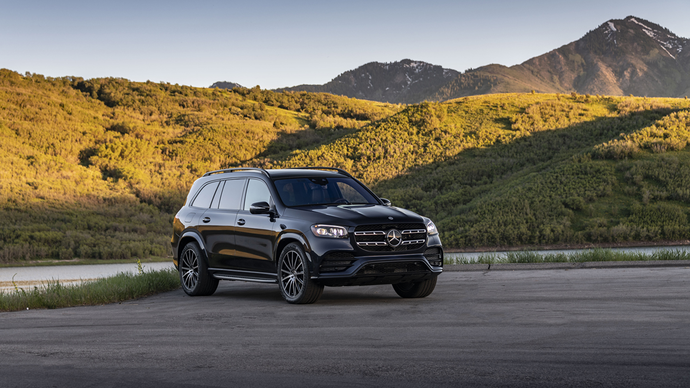

Samochody
Moim zainteresowaniem jest motoryzacja. Jest to zagadnienie wiazane z pojazdami (głównie samochodami). Wyróżniamy samochody z silnikami spalinowymi i elektrycznymi, a takze hybrydowymi.
Samochody są bardzo przydatnym i ważnym elementem w przemieszczaniu sie. Elementami, które decyduja o zakupie samochodu są m.in wygląd, wyposażenie, kolor, bezpieczeństwo, spalanie, wielkość bagażnika, nadwozie, marka, moc, rodzaj napędu, koszty eksploatacji, cena, właściwości jezdne, wyciszenie wnętrza. Jeżeli chodzi o bezpieczeństwo producenci w dzisiejszych czasach przykładaja do tego bardzo dużą uwagę. Samochody są wyposażone w szereg asystentów bezpieczeństwa np. asystent unikania kolizji, asystent martwego pola, asystent utrzymania na pasie ruchu, poduszki powietrzne itd.
Kolejnym aspektem jest wyposażenie, w którego skład wchodzą np. podgrzewane i wentylowane fotele z elektryczną regulacją, nawigacja, android auto, apple car play, dach panoramiczny. Wyróżniamy rózne rodzaje nadwozia np. SUV, Sedan, Kombi. Spalanie to też ważna sprawa. Zależy ono od wielkosci auta, wielkosci silnika i mocy. Wyróżniamy 3 typy napędów: AWD, czyli naped na 4 kola, FWD, czyli naped na przednie kola i RWD, czyli naped na tylnie kola. Ważne jest także to, żeby samochód był tani w eksploatacji, czyli miał tanie części zamienne i rzadko sie psuł. Ludzie chetniej siegaja po auta z klasy średniej ze wzgledu na ich cenę .
Najpopularniejszymi samochodami w Polsce w 2024r. we wrześniu byly: